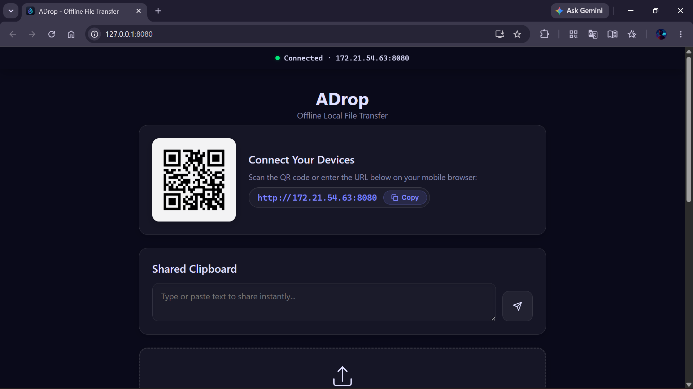
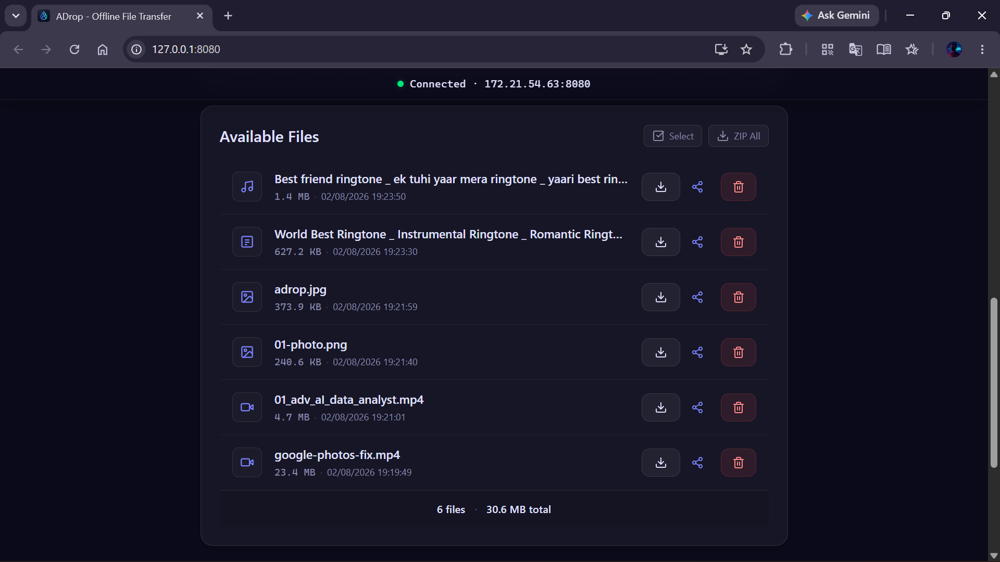
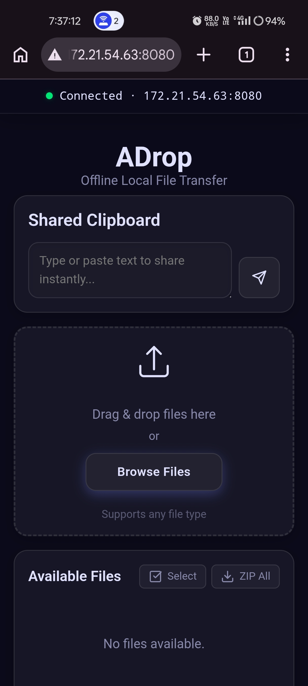
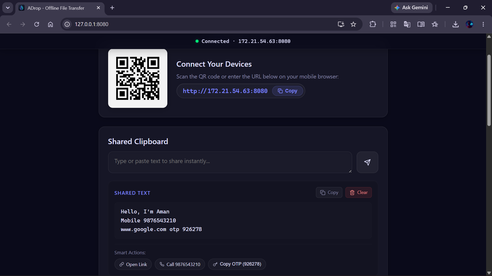
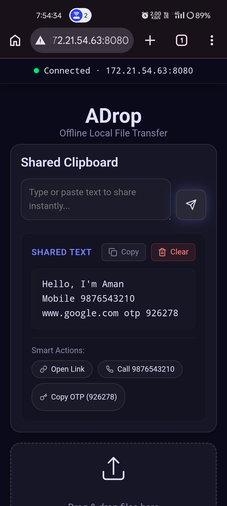
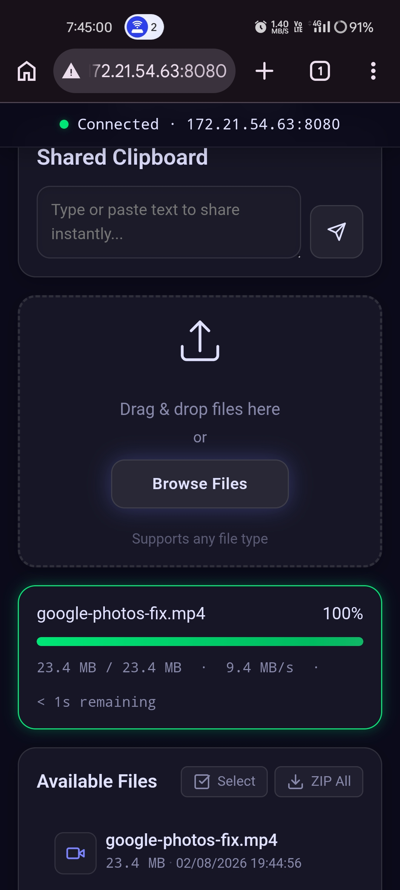

Transfer files between your phone and PC — no internet, no cables, no apps to install.
v2.0.0 · Windows · Free & Open Source
Windows 10/11 · ~18 MB · No installation needed for Portable version
Full LAN speed directly over your network. No internet connection required.
Just scan and go! No companion app needed on your mobile device.
Auto-detects URLs, phone numbers, and OTPs for quick copying.
Stream videos, listen to audio, and view images right in your browser.
Interrupted connection? ADrop automatically resumes your transfers.
Optional security layer to keep your transfers completely private.
Download multiple files or entire folders instantly as a ZIP archive.
Constant memory usage, extensively tested with multi-gigabyte files.
Add ADrop to your phone's home screen for a native app-like experience.
Stream files directly from their original location without duplication.
Firewall rules, browser launching, and IP detection handled automatically.
WebSocket integration for instantaneous updates across devices.
Double-click ADrop.exe on your PC. No complex installation required.
Use your phone's camera to scan the QR code displayed on your screen.
Drag, drop, done! Access files both ways instantly.






Best for regular use on your personal PC. Automatically configures firewall rules for seamless connection.
Download InstallerRun directly from a USB drive or specific folder. Leaves no trace on the system. Perfect for work PCs.
Download Portable